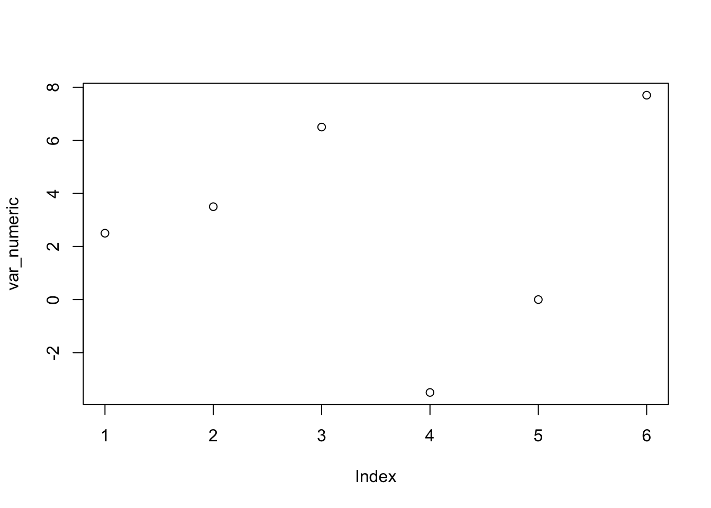

<-: o ‘assignment operator’var_numeric <- c(2.5 ,3.5 ,6.5 , -3.5, 0 , 7.7)
var_integer <- c(2 ,3 ,6 , -3, 2, 9)
var_factor <- factor (c("alto","baixo","baixo", "alto", "alto", "baixo"))
var_char <- c("João","Rute","Pedro", "Filipa", "Ana", "Fatima")
var_log <- c(TRUE,TRUE,TRUE,FALSE,FALSE,TRUE)
var_integerNA <- c(2 ,3 ,NA , -3, NA, NA)DF <- data.frame (var_char,var_numeric,var_integer,var_factor,var_log,var_integerNA)## [1] 2.5 3.5 6.5 -3.5 0.0 7.7## [1] 2 3 6 -3 2 9## [1] alto baixo baixo alto alto baixo
## Levels: alto baixo## [1] "João" "Rute" "Pedro" "Filipa" "Ana" "Fatima"## [1] TRUE TRUE TRUE FALSE FALSE TRUE## var_char var_numeric var_integer var_factor var_log var_integerNA
## 1 João 2.5 2 alto TRUE 2
## 2 Rute 3.5 3 baixo TRUE 3
## 3 Pedro 6.5 6 baixo TRUE NA
## 4 Filipa -3.5 -3 alto FALSE -3
## 5 Ana 0.0 2 alto FALSE NA
## 6 Fatima 7.7 9 baixo TRUE NAtable (var_factor)## var_factor
## alto baixo
## 3 3plot (var_numeric)
| Operador | Descrição |
|---|---|
| + | addition |
| - | subtraction |
| * | multiplication |
| / | division |
| ^ or ** | exponentiation |
| x %/% y | integer division 5%/%2 is 2 |
| Operador | Descrição |
|---|---|
| < | less than |
| <= | less than or equal to |
| > | greater than |
| >= | greater than or equal to |
| == | exactly equal to |
| != | not equal to |
| !x | Not x |
| x | y |
| x & y | x E y |
| is.na(x) | testar se x tem NAs |
c(): combine or concatenatec (25 , 33 , 30 , 42 , 26 , 28) ## [1] 25 33 30 42 26 28seq(): sequenceseq (1,6)## [1] 1 2 3 4 5 6rep(): replicaterep (2017, 6) # replicate 2017 six times ## [1] 2017 2017 2017 2017 2017 2017###Funções mais comuns | Função | Descrição | | :— | :—- | | seq(from , to, by) | generate a sequence | | rep(x, ntimes) | repeat x n times | | cut(x, n) | divide continuous variable in factor with n levels | | sort (x) | ordenar | | length (x) | extensão |
cbind(object, object, …) # combine objects as columns rbind(object, object, …) # combine objects as rows
Calculating over variables
length(DF$var_numeric)## [1] 6sum(DF$var_numeric)## [1] 16.7mean (DF$var_numeric)## [1] 2.783333median(DF$var_numeric)## [1] 3sort (DF$var_numeric) ## [1] -3.5 0.0 2.5 3.5 6.5 7.7table (DF$var_factor)##
## alto baixo
## 3 3class (DF$var_numeric)## [1] "numeric"class (DF$var_integer)## [1] "numeric"class ( DF$var_factor)## [1] "factor"class ( DF$var_char)## [1] "character"Missings (NA)is.na(DF$var_integerNA)## [1] FALSE FALSE TRUE FALSE TRUE TRUE# !is.na(DF$var_integerNA)table (is.na(DF$var_integerNA) )##
## FALSE TRUE
## 3 3DF$var_num## [1] 2.5 3.5 6.5 -3.5 0.0 7.7DF$var_num [1] ## [1] 2.5DF$var_num [4] ## [1] -3.5DF$var_num [1:3]## [1] 2.5 3.5 6.5DF$var_num [2:5]## [1] 3.5 6.5 -3.5 0.0DF$var_num [4:1]## [1] -3.5 6.5 3.5 2.5DF$var_num [-1] # negative index## [1] 3.5 6.5 -3.5 0.0 7.7DF$var_num [20] # Out-of-Range Index = NA## [1] NAclass (DF) # class of the object ## [1] "data.frame"nrow (DF) # number of rows ## [1] 6ncol (DF) # number of columns ## [1] 6dim(DF) # dimension (rows & columns) ## [1] 6 6object.size(DF) # size in bytes## 2472 bytesnames (DF) # names of variables## [1] "var_char" "var_numeric" "var_integer" "var_factor"
## [5] "var_log" "var_integerNA"head (DF) # head of the dataframe (first 6 observations)## var_char var_numeric var_integer var_factor var_log var_integerNA
## 1 João 2.5 2 alto TRUE 2
## 2 Rute 3.5 3 baixo TRUE 3
## 3 Pedro 6.5 6 baixo TRUE NA
## 4 Filipa -3.5 -3 alto FALSE -3
## 5 Ana 0.0 2 alto FALSE NA
## 6 Fatima 7.7 9 baixo TRUE NAhead (DF, 13) # first 13 observations## var_char var_numeric var_integer var_factor var_log var_integerNA
## 1 João 2.5 2 alto TRUE 2
## 2 Rute 3.5 3 baixo TRUE 3
## 3 Pedro 6.5 6 baixo TRUE NA
## 4 Filipa -3.5 -3 alto FALSE -3
## 5 Ana 0.0 2 alto FALSE NA
## 6 Fatima 7.7 9 baixo TRUE NAtail (DF) # tail of the dataframe (last 6 observations)## var_char var_numeric var_integer var_factor var_log var_integerNA
## 1 João 2.5 2 alto TRUE 2
## 2 Rute 3.5 3 baixo TRUE 3
## 3 Pedro 6.5 6 baixo TRUE NA
## 4 Filipa -3.5 -3 alto FALSE -3
## 5 Ana 0.0 2 alto FALSE NA
## 6 Fatima 7.7 9 baixo TRUE NAtail (DF, 10) # last 10 observations## var_char var_numeric var_integer var_factor var_log var_integerNA
## 1 João 2.5 2 alto TRUE 2
## 2 Rute 3.5 3 baixo TRUE 3
## 3 Pedro 6.5 6 baixo TRUE NA
## 4 Filipa -3.5 -3 alto FALSE -3
## 5 Ana 0.0 2 alto FALSE NA
## 6 Fatima 7.7 9 baixo TRUE NAsummary(DF) # Summary for each variable of the dataframe## var_char var_numeric var_integer var_factor
## Length:6 Min. :-3.500 Min. :-3.000 alto :3
## Class :character 1st Qu.: 0.625 1st Qu.: 2.000 baixo:3
## Mode :character Median : 3.000 Median : 2.500
## Mean : 2.783 Mean : 3.167
## 3rd Qu.: 5.750 3rd Qu.: 5.250
## Max. : 7.700 Max. : 9.000
##
## var_log var_integerNA
## Mode :logical Min. :-3.0000
## FALSE:2 1st Qu.:-0.5000
## TRUE :4 Median : 2.0000
## Mean : 0.6667
## 3rd Qu.: 2.5000
## Max. : 3.0000
## NA's :3str (DF) # Structure of the dataframe## 'data.frame': 6 obs. of 6 variables:
## $ var_char : chr "João" "Rute" "Pedro" "Filipa" ...
## $ var_numeric : num 2.5 3.5 6.5 -3.5 0 7.7
## $ var_integer : num 2 3 6 -3 2 9
## $ var_factor : Factor w/ 2 levels "alto","baixo": 1 2 2 1 1 2
## $ var_log : logi TRUE TRUE TRUE FALSE FALSE TRUE
## $ var_integerNA: num 2 3 NA -3 NA NADF## var_char var_numeric var_integer var_factor var_log var_integerNA
## 1 João 2.5 2 alto TRUE 2
## 2 Rute 3.5 3 baixo TRUE 3
## 3 Pedro 6.5 6 baixo TRUE NA
## 4 Filipa -3.5 -3 alto FALSE -3
## 5 Ana 0.0 2 alto FALSE NA
## 6 Fatima 7.7 9 baixo TRUE NADF [1 ,6 ] # linha 1 , coluna 6## [1] 2DF [1 , ] # linha 1 , colunas todas## var_char var_numeric var_integer var_factor var_log var_integerNA
## 1 João 2.5 2 alto TRUE 2DF [ ,6 ] # linhas todas, coluna 6## [1] 2 3 NA -3 NA NADF [1:5, ] # linhas 1 a 5 , colunas todas## var_char var_numeric var_integer var_factor var_log var_integerNA
## 1 João 2.5 2 alto TRUE 2
## 2 Rute 3.5 3 baixo TRUE 3
## 3 Pedro 6.5 6 baixo TRUE NA
## 4 Filipa -3.5 -3 alto FALSE -3
## 5 Ana 0.0 2 alto FALSE NADF [ , 3:6] # linhas todas , colunas 3 a 6 ## var_integer var_factor var_log var_integerNA
## 1 2 alto TRUE 2
## 2 3 baixo TRUE 3
## 3 6 baixo TRUE NA
## 4 -3 alto FALSE -3
## 5 2 alto FALSE NA
## 6 9 baixo TRUE NADF [1:3,4:6]## var_factor var_log var_integerNA
## 1 alto TRUE 2
## 2 baixo TRUE 3
## 3 baixo TRUE NADF [c(1,2,3), c(4,5,6)]## var_factor var_log var_integerNA
## 1 alto TRUE 2
## 2 baixo TRUE 3
## 3 baixo TRUE NADF [ ,-c(1,2)] # linhas todas, colunas todas menos 1 e 2## var_integer var_factor var_log var_integerNA
## 1 2 alto TRUE 2
## 2 3 baixo TRUE 3
## 3 6 baixo TRUE NA
## 4 -3 alto FALSE -3
## 5 2 alto FALSE NA
## 6 9 baixo TRUE NA